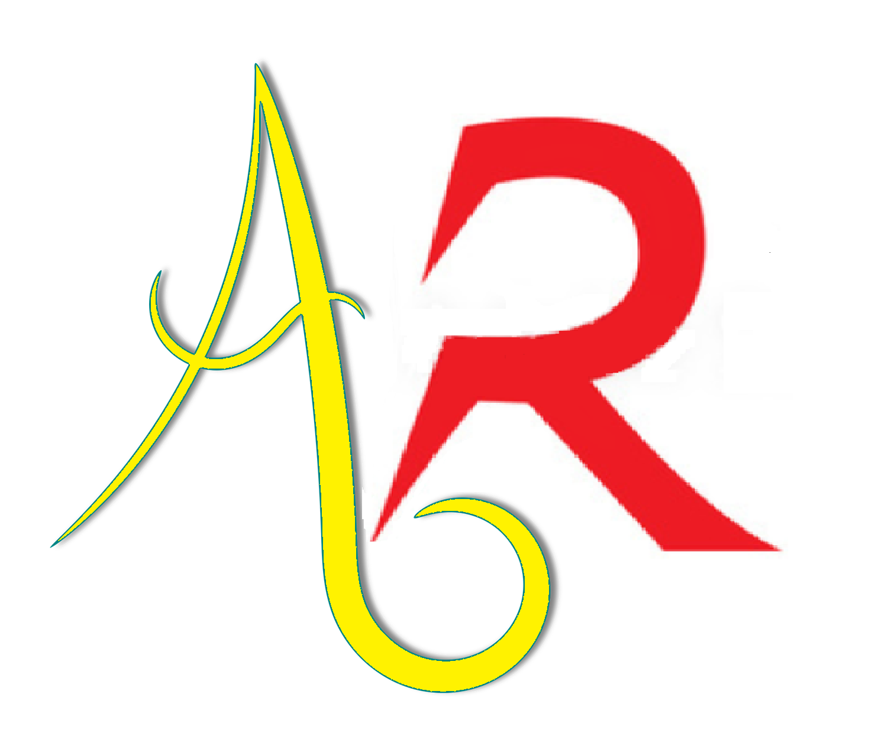

<nav class="navbar navbar-dark py-0 bg-primary navbar-expand-lg py-md-0">
    <a class="navbar-brand" href="#" py-0>
      
    </a>
  <button class="navbar-toggler mt-1" type="button" data-toggle="collapse" data-target="#navbarNav" aria-expanded="false" aria-label="Toggle navigation">
      <i class="fa fa-bars"></i>
  </button>
  <div class="navbar-collapse collapse" id="navbarNav">
    <h2 class="title">Age Recognition</h2>
  </div>
</nav>

<div class="d-flex flex-row bd-highlight mb-3">
    <div class="align-self-start">
        <div id="app" style="margin-top: 2%; margin-left: 2%">
            <div style="display: none"><video #video id="video" width={{cameraWidth}} height={{cameraHeight}} autoplay *ngIf="showResults == false"></video></div>
            
            <canvas #canvas1 id="canvas1" width={{cameraWidth}} height={{cameraHeight}} *ngIf="showResults == false"></canvas>
            
            <canvas #canvas2 id="canvas2" width={{cameraWidth}} height={{cameraHeight}} style="display: none"></canvas>
        </div>
    </div>

    <div class="d-flex flex-column bd-highlight mb-3" style="margin-left: 2%; margin-right: 2%; margin-top: 2%">
        <li class="desc" flex-fill style="height: 500;">Cześć! To jest nasza super aplikacja. Możesz być dumny, że dane było Ci ją przetestować! TODO</li>
        <div class="startRecordButton"  align-self-center flex-fill *ngIf="showResults == true"><button flex-fill align-self-center class="btn btn-primary" id="record" (click)="record()">Start Recording</button></div>
        <li class="desc" >Last captured photos:</li>
        <ul class="align-self-stretch flex-fill" style="margin-top: 2%">
            <li *ngFor="let c of captures; let i = index">
                
            </li>
        </ul>
    </div>
</div>


<nav class="navbar navbar-dark py-0 bg-primary navbar-expand-lg py-md-0 fixed-bottom">
    <div class="navbar-collapse collapse" id="navbarNavBottom">
        <li class="navbarBottom">Authors: Daria Hubernatorova, Piotr Wawrzyniak, Damian Gutowski</li>
    </div>
</nav>